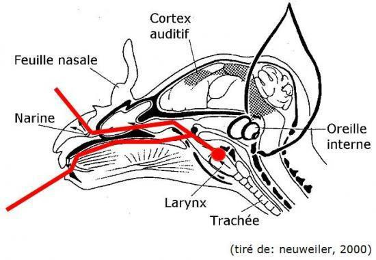

L'écholocalisation et la chauve-souris

Les chauves-souris ont développé au court de l’évolution le moyen de chasser, se diriger dans l’obscurité complète : l’écholocation.
il est drôle de noter qu'elle sont l'exacte opposées de l’homme : elles misent tout sur l’ouïe et nous sur la vue.
Ce système très évolué, permet d’avoir une vue d’ensemble de leur environnement, mais aussi, une vue très précise. Pour cela, elles doivent faire varier la fréquence des ultrasons émis. La chauve-souris possède un sonar "naturel" grâce à ses organes.
Pour produire des ultrasons, les chauves-souris se servent de leur larynx qui en se contractant permet d’expirer de l’air et donc de faire vibrer leurs cordes vocales (le même système étant commun à un grand nombre d’espèces). Une fois les sons produits, ils passent par des résonateurs et subissent une transformation comme le pharynx puis arrivent jusqu’aux organes émetteurs. Soit ils passent par les cavités nasales et la bouche soit par les narines et les feuilles nasales. Cela dépend des espèces… (Donc les chauves-souris émettent les ultrasons par le nez et/ou la bouche).
Les organes émetteurs ne peuvent faire varier le son, ni le réceptionner : c’est le rôle de la bouche ou les narines puis des oreilles et du cerveau.
En effet, la bouches et les narines de la chauve-souris sont mobiles (dans une moindre mesure) cela permet notamment d’opérer a un quadrillage plus complet de la zone et donc potentiellement mieux connaître son environnement, éviter les mauvaises surprises…